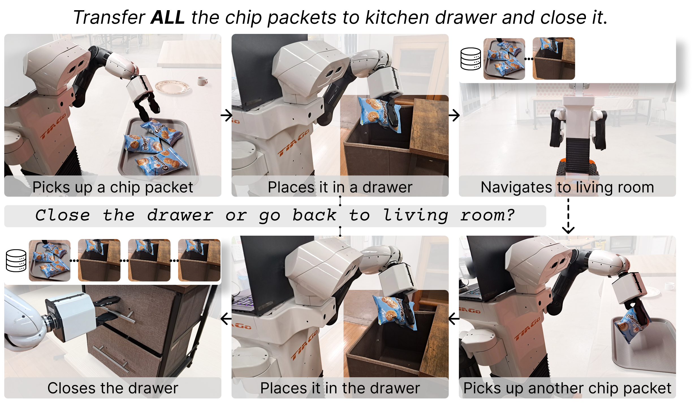
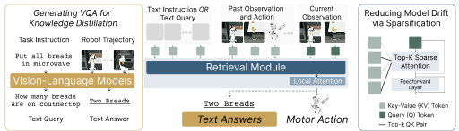
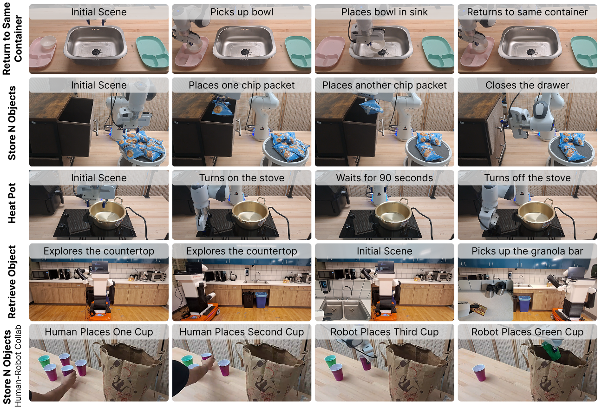

Diverse Memory
Tasks require spatial, relational, numerical, temporal, and progress-related information from earlier in the episode.
HALO
General-purpose robots operating in partially observable environments, such as homes, require memory to support autonomy. They must recall diverse information from the past, such as where objects were placed, which tasks a human partner has completed, and when an appliance was turned on, to accomplish a wide range of tasks. Achieving this versatility requires a memory retrieval mechanism that generalizes well across tasks.
We introduce HALO, a visuomotor policy with an attention-based memory retrieval mechanism for long-horizon control. HALO leverages vision-language model priors to steer retrieval toward task-relevant information through automatically generated video question-answering supervision, and uses sparse attention to restrict retrieval to the most relevant parts of the history. Together, these components enable more reliable long-horizon control by guiding the policy to retrieve task-relevant information from up to eight minutes of past experience.
Long-horizon household tasks often depend on information that is no longer visible when the robot needs to act. HALO learns to retrieve useful memories from earlier observations and actions, allowing a policy to reason over spatial information, object relations, counts, temporal events, and task progress without relying on hand-designed memory rules.

Tasks require spatial, relational, numerical, temporal, and progress-related information from earlier in the episode.
The policy uses attention over encoded history instead of a task-specific memory representation or manually selected features.
HALO retrieves from histories spanning up to eight minutes while reducing the drift that comes from noisy closed-loop execution.

Observation and action encoders map RGB images, proprioception, and past actions into a shared memory space used by the policy backbone.
Generated video question-answer pairs supervise the model to attend to past events that are relevant for the current task instead of spurious correlations in the demonstrations.
At each step, the policy selects only the most relevant memory entries, limiting the impact of accumulated prediction errors during closed-loop execution.
HALO is evaluated on long-horizon manipulation tasks that require retrieving spatial, relational, numerical, and event-time information from history, including real-world tasks on stationary and mobile manipulation platforms.
| Method | Retrieve Object | Return to Container | Store N Objects | Heat Stove | Average |
|---|---|---|---|---|---|
| Standard Transformer | 0.26 | 0.23 | 0.12 | 0.27 | 0.22 |
| Scene Memory Transformer | 0.53 | 0.25 | 0.17 | 0.40 | 0.34 |
| SAM2Act++ | 0.39 | 0.11 | 0.27 | 0.04 | 0.20 |
| ReMemBer | 0.36 | 0.13 | 0.21 | 0.00 | 0.18 |
| Hand-Designed Features | 0.68 | 0.15 | 0.21 | 0.13 | 0.29 |
| Token Merging | 0.29 | 0.24 | 0.25 | 0.38 | 0.29 |
| HALO w/o VQA | 0.42 | 0.29 | 0.17 | 0.37 | 0.31 |
| HALO | 0.64 | 0.32 | 0.26 | 0.40 | 0.41 |
| Method | Retrieve Object | Return to Container | Store N Objects | Heat Stove | Human-Robot Store N | Average |
|---|---|---|---|---|---|---|
| Standard Transformer | 0.40 | 0.30 | 0.20 | 0.40 | 0.50 | 0.36 |
| HALO | 0.55 | 0.40 | 0.55 | 0.60 | 0.65 | 0.55 |

Robot rollout videos will be added here once the final videos are available.
Spatial memory rollout slot.
Object-relation memory rollout slot.
Numerical memory rollout slot.
Event-time memory rollout slot.